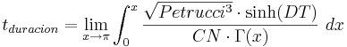
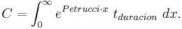

De: La Frikipedia, la enciclopedia extremadamente seria.
De: La Frikipedia, la enciclopedia extremadamente seria. De: La Frikipedia, la enciclopedia extremadamente seria.
| De la serie Fucking Metal: | |||
| Progressive metal | |||
| |||
| ¿Dónde se comenzó a reventar oidos? | En marte | ||
| Instrumentos | Guitarra, bajo o chapman stick, batería, teclados y voz. | ||
| Subgéneros revienta oidos | Technical Metal | ||
| Fusiones | {{{fusiones}}} | ||
| Los mas tesos | | ||
El Metal Progresivo (Progresive métal para los que hablan japonés u otra lengua desconocida) es un estilo de miusik que arrejunta el rock progresivo y el jebi métal en cualquiera de sus razas y/o condición política.
Debido a que mezclan el rock progresivo y el jebi métal, el papa Benedicto XVI los condenó a que sus temas debían durar más de 9.15646545E-48465 años con 5.4121654E-5645 cambios de ritmo. Se dice que nació de un estornudo de John Petrucci en el año 2654 antes de la matanza de los wakamolas por Chuck Norris.
Es padre del Power Metal y se folló al Death Metal.
Todas la mayoría de las canciones duran como mínimo 19 días, acompañado de compaces altamente imposibles complejos y bien estructurados cambios de tiempo, solos virtuosos de guitarra y teclados que te cagas al oírlos, compuestos en compáses de 9/14.666 y en un tiempo de 9999999999999999999999999999991 BPM, escritos en una partitura dibujada con semen tinta de Dios y con una duración infinita. Además de que las canciones tienen cierta atmósfera filosófica por lo que se le ha llamado "El metal del hombre pensador".
Hay que destacar que ninguna canción puede ser tocada si no es con una guitarra que cuente con: un minimo de 4 mastiles (hechos de roble y cedro), 579 pedaleras de efectos, 16 controles de sonidos, clavijas y jack de sonido hechos de plata de 14 kilates, 8 pastillas dobles con incrustaciones de oro y diamante, 22 amplificadores de 13812941 watts de potencia, y cuerdas hechas de una aleación de platino y vibranium (para que vibren mas); además de que todo tiene que ser de la marca más cara que encuentres en la tienda; de preferencia usa una Gibson Jem 78 RBU modelo DFGHO 426, una Ibanez HAC 1B17 modelo VIH 69, Una Fender WTF 920, o una BC Rich HSBC 4374 modelo VHS 395.
En un estudio de Chuck Norris y John Petrucci, dieron a conocer la sencilla ecuación trigonométrica exponencial diferencial en coordenadas polares para calcular la duración de un tema progresivo:

Donde DT=Dream Theater y CN=Chuck Norris
Y para calcular los cambios de tiempo:

Éstos son algunos grupos que todo buen Progresive Metalero debería tener en su colección, y algunas de sus canciones (casi todas duran más de 10 horas).
Dream Theater (no pueden faltar): Banda conformada por puro talento, tienen cada uno de los mejores, Juanito Piedruchi tocando el arpa, Miguel Porno marcando el paso pegándose en los muslos, Jordan Rudo como tecladista, Jaimito LeAbrí gritando cantando y John Nosequieneres en el bajo. Escucha toda su discografía, tienen canciones muy progressivas y otras muy pesadas, para todos los gustos. Panic Attack
Porcupine Tree: Banda algo más relajada, les mola más lo oscurito. Su disco Deadwing es la hostia. Way out of here
Circus Maximus: Gran banda proveniente de Noruega, tiene una clara influencia del Power Metal. Escucha The first chapter.
Opeth: Una gran mezcla de Death, Progressive, Extreme, Thrash, Brutal, Black, Hyper-sweet Metal, que da como resultado una de las bandas más talentosas y prósperas del Progressive, Su cantante y líder Mikael Akerfeld tienen una habilidá especial para cantar tan grave como un león follando gruñiendo y a la vez tan suave y delicado como cualquier hombre treintañero de suecia. Se piensa que los integrantes de la banda son asesinos en serie.
Ayreon: Una de las mejores bandas de Metal Aburrido Progresivo. Todos sus discos son obras conceptuales escritas por Arjen Lucassen después de un buen porro, cómo no!. Escucha su álbum 01011001 (no es una broma... en serio no es de coña)
Liquid Tension Experiment: El mejor puto super-grupo que pudieras haber pedido, está conformado por John Petrucci o Dios, como prefieras llamarlo, Mike Portnoy, Jordan Rudess (los tres son de Dream Theater) y el grandísimo Tony Levin con su chapman stick de 122 cuerdas. Escucha sus discos Liquid Tension Experiment y Liquid Tension Experiment II (vaya qué originales). Acid Rain
Autor(es):